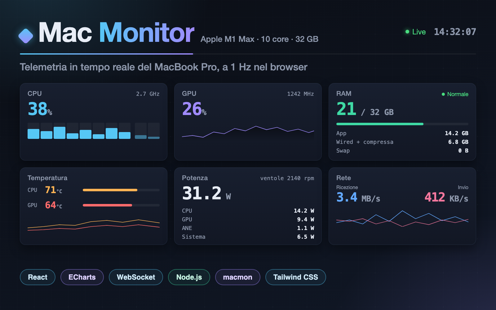
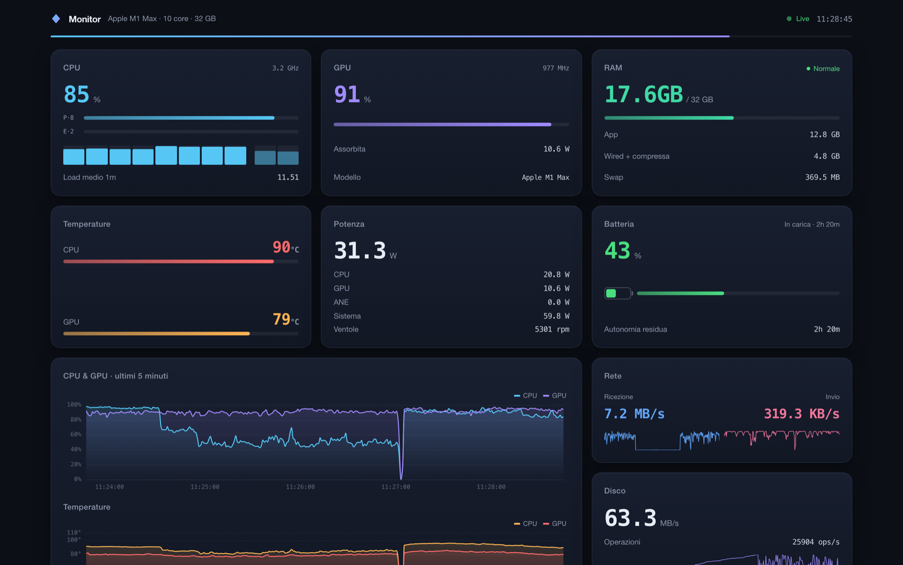
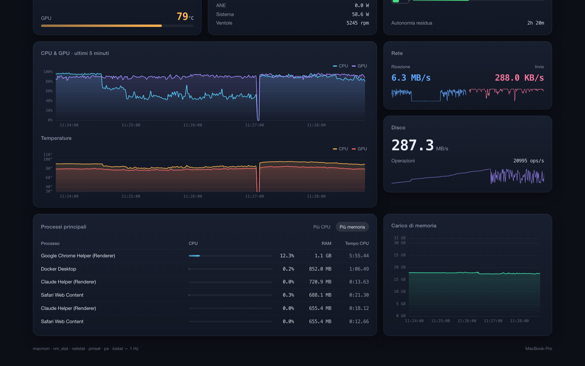

A real-time system monitor for Apple Silicon MacBooks: CPU, GPU, temperatures, power, memory, network and disk, streamed live to the browser.
Mac Monitor turns an Apple Silicon MacBook Pro into an instrument panel you can watch in the browser. A small local server reads the machine once per second — silicon sensors, memory, network, battery, disk and processes — and streams every reading to the dashboard over a WebSocket, so all numbers and charts advance together in real time.
It covers everything you would check when the machine gets loud or slow: per-core CPU usage split between performance and efficiency clusters with live frequencies, GPU load, CPU and GPU temperatures, power drawn by CPU, GPU, the neural engine and the rest of the system, fan speed, memory with its wired and compressed breakdown and a pressure badge, swap, network throughput, disk activity and the processes behind the load.
The design treats numbers as instruments: tabular monospaced digits, colour-coded meters that change hue as temperatures climb, mirrored sparklines for network traffic, and a gradient "pulse" strip under the header that widens and narrows with the CPU. Nothing is stored, uploaded or sent anywhere — the whole stack runs on the laptop itself.
One screen, no dashboard sprawl: the state of the whole machine at a glance, readable from across the desk, with five minutes of history available for every trend the moment you want to look back.
Six instrument cards fill the top of the page. CPU shows total load, separate meters for the performance and efficiency clusters, a bar for every individual core and the processor frequency. Beside it, GPU usage and clock, memory with its App / Wired + compressed / Swap breakdown and a three-state pressure badge, temperatures whose colour escalates from blue to amber to red, total power split across CPU, GPU, the neural engine and the system with fan speed, and battery with charge state and time remaining.


The centre of the dashboard keeps a rolling five-minute window for every trend: CPU and GPU usage on one chart, CPU and GPU temperatures on another, memory load below, and live sparklines on the network and disk cards. The history lives in the browser and scrolls one sample per second, so a compile or a burst of downloads stays readable long after it is over.
Below the charts, the process table ranks the top processes by CPU or by memory with inline load bars and cumulative CPU time, making it easy to connect a spike on the chart to what actually caused it.
A small Node server keeps the sensor sources alive: a streaming reader for the Apple Silicon telemetry (CPU per core, GPU, temperatures, power, fans) alongside per-second snapshots of memory, network, battery and processes, plus a continuously running disk sampler. Each source restarts itself if it dies, and the dashboard degrades gracefully when a sensor is unavailable rather than failing.
Once per second the server merges every source into a single snapshot and broadcasts it to all connected browsers over a WebSocket; the interface reconnects automatically if the connection drops. The browser keeps the five-minute history in memory and renders the charts with ECharts. All of the parsing logic is written as pure functions, separate from the collectors and covered by its own test suite, and nothing requires elevated privileges.
The whole interface: instrument cards, per-core bars, sparklines, the sortable process table and a custom hook that owns the WebSocket connection, automatic reconnection and the rolling five-minute history.
ES modules throughout, from the pure metric parsers covered by unit tests to the collector orchestration on the server side.
The local server: an Express endpoint set with a health check, a WebSocket broadcast of the once-per-second snapshot, and supervised child processes for the system sensors.
Dev server with hot reload and a proxied API/WebSocket target, and the production build that the Node server then serves as static files.
The scrolling usage, temperature and memory charts, tuned to the dashboard's dark instrument theme.
The theme tokens — ink, panel, fog and the per-metric accent colours — and the responsive card grid, from three columns on a desktop down to a single column on a phone.